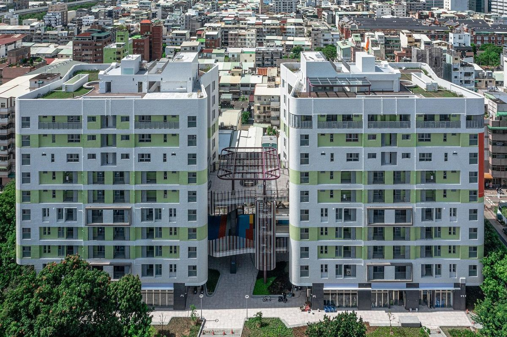
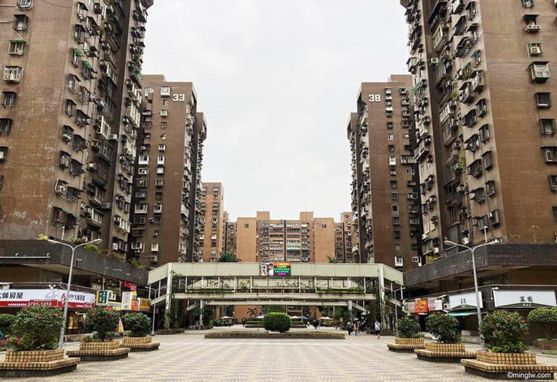
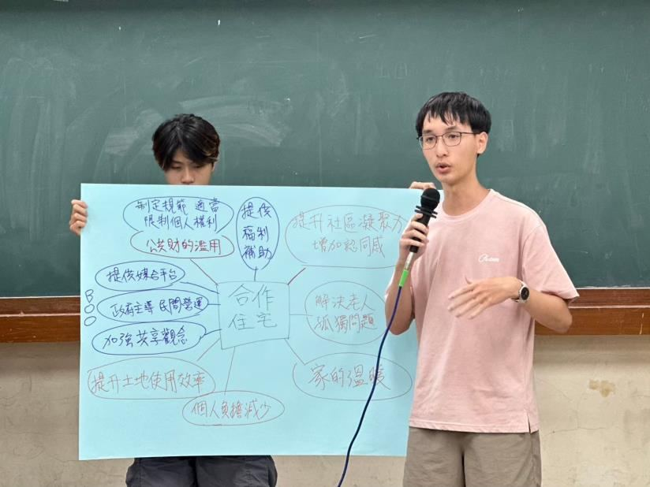
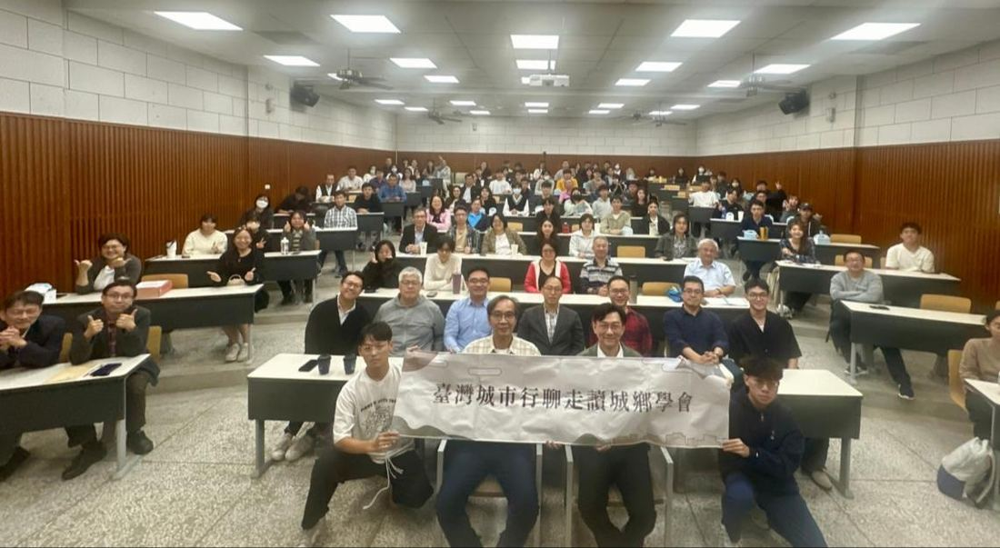
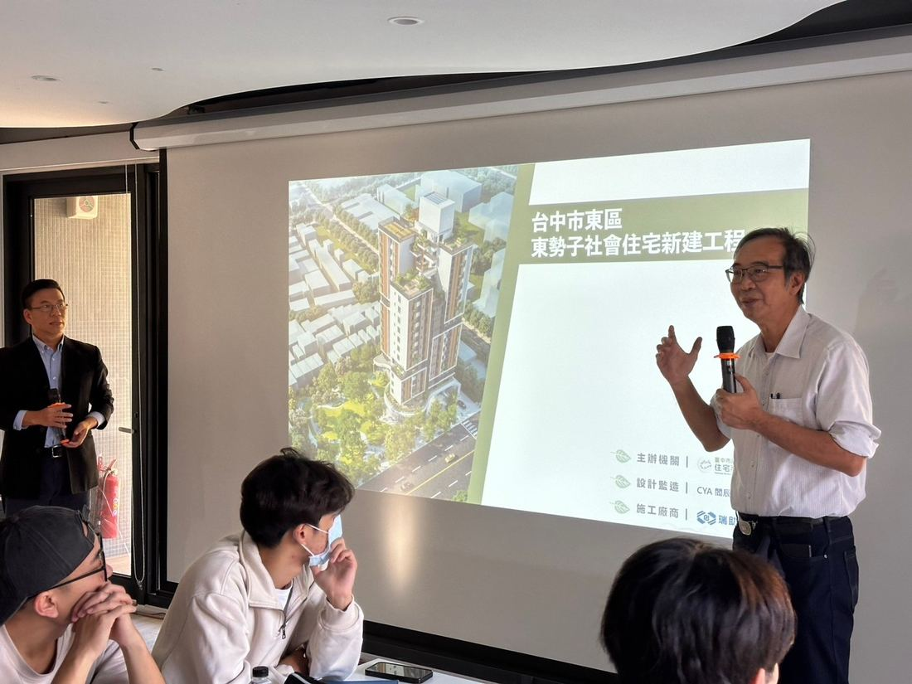
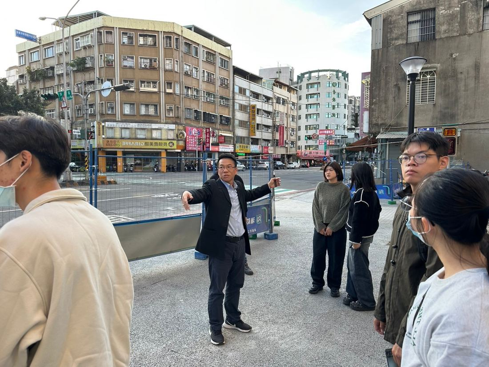
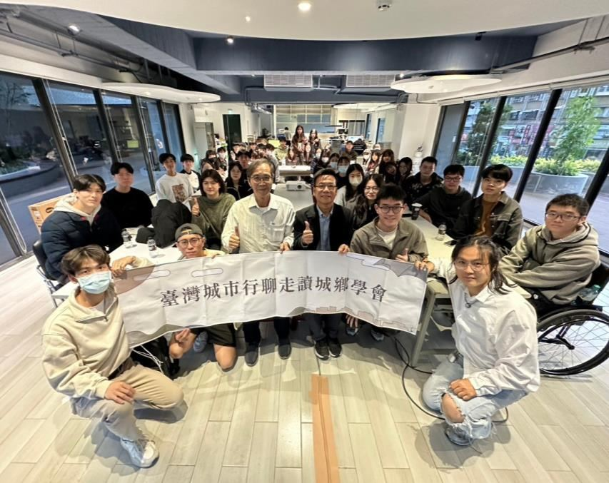

近二十年住宅政策重大變革
- 1989無殼蝸牛運動，掀起國宅興建熱潮
- 1999停止興建國民住宅；2000 年停止獎勵民間興建
- 2005《整體住宅政策》首次明確提出社會住宅
- 2007整合住宅補貼資源實施方案，推出租金補貼
- 2012《住宅法》施行，廢止國民住宅條例
- 2015《整體住宅政策》修正，提出無障礙、弱勢協助與公平租購目標
1976 年起為期 14 年的「國宅計畫」大量推動國宅興建，但資金運用與土地取得困難，國宅興建緩慢、與市場供需脫節、價格又比同等級住宅昂貴，1990 年代大量滯銷。社會抗議政府濫用資源，政府於 1999 年底停止興辦國民住宅。2012 年《住宅法》將社會住宅定義為「由政府興辦或獎勵民間興辦，專供出租之用」，並應提供至少 10% 給具特殊情形或身分者。


讀書會：從社會住宅到合作住宅
第三屆第一期讀書會先把住宅政策的概念攤開：可負擔住房、居住權、住房供應、社會包容、租賃市場穩定與社區參與；再把住宅模式分成政府主導（社會住宅、公共租賃住房、共有產權住房、包租代管、都更住宅）與民間主導（合作住宅、自助建房、微型住宅、社區土地信託、住商混合）兩類。
社會住宅
制度源自 19 世紀末歐陸的公共衛生危機，二戰後進入大量興建高峰，90 年代起轉型調整。被稱為「社會住宅世界首都」的維也納，社宅比例高達 45%，102 萬戶住宅中有一半的市民住在市府出租或公私合營的社宅。臺灣推動社宅則面臨土地供應不足、財政壓力，以及租期限制帶來的居住不穩定。
合作住宅
一群理念相同的人共同創建、管理居住的房屋與社區：透過購買合作社股份取得居住使用權、重要決策由住戶投票、共同分擔管理與維護成本。案例包括瑞士蘇黎世 Kraftwerk1、日本茨城的龍崎長者村，以及新北市的「員和共居」。在臺灣則受限於認知不足、法規不明確，以及偏好個人擁有產權的居住文化。
站在負責推動社宅政策的政府部門，或是社區居民與合作住宅倡導者的角色：如何改善社會住宅實行上的問題？又該如何推行臺灣的合作住宅政策？
三條路線的優缺點
| 社會住宅興辦計畫 | 包租代管計畫 | 租金補貼措施 | |
|---|---|---|---|
| 優點 | 以市場租金六成至八成五出租；至少 40% 出租給經濟或社會弱勢；導入綠建築、太陽能光電、智慧建築與無障礙設計 | 以租屋市場制衡房價過度上漲；房東可減輕綜合所得稅、房屋稅與地價稅 | 每人每月補貼 2,000 至 8,000 元；「租金補貼 2.0」申請年齡由 20 歲下修至 18 歲 |
| 缺點 | 供應明顯不足；長期經營管理經費須納入考量；真正的經濟弱勢仍可能照顧不到 | 成本是租金補貼的兩倍以上；制度不完善，沒有規定房東資訊透明 | 「申請補貼不需房東同意」，房東可能變相向房客漲租 |
從讀書會到社宅現場
合作住宅工作坊從真實案例出發，剖析合作住宅的政策背景、運作機制與管理模式。各組從單層平面、一棟建築到整體社區，運用永續發展、樂齡友善、綠建築與共享空間的概念，畫出理想中的合作住宅。
《無住之島》講座邀請 OURs 都市改革組織研究員、《無住之島》作者廖庭輝，由逢甲大學土地管理學系張育端助理教授引言。廖庭輝長期研究住宅與都市改革運動，推動《住宅法》與「實價登錄 2.0」的修法倡議，從住宅政策的發展背景談到居住正義。OURs 針對整體住宅政策提出五個初步方案：緊縮房產投資金流、釋出空屋提供租住、去黑市保障租屋權益、降低租屋負擔、承諾社宅繼續興辦，並在 2023 年與其他民間組織成立租客聯盟。
董建宏次長講座由劉曜華老師先分享臺灣社會住宅推動的實際狀況，董次長再從住宅的定義與價值談起，剖析住宅政策與國土計畫的關聯，探討社會住宅在國土規劃中的實踐，聚焦如何透過土地規劃實現居住公平。
社會住宅參訪由劉曜華老師帶隊到臺中東區「協園社會住宅」，臺中市住宅發展工程處處長親自主講，從政策制定、土地整合到建築設計，說明社會住宅的發展歷程與制度運作。室內參觀時，同學針對社宅租金機制、弱勢族群保障熱烈提問；室外導覽則看社宅的區位，以及它如何串聯周邊公共設施與大眾運輸。





延伸閱讀：學會刊物《土地註腳》的每月議題〈共融．共榮：社會住宅與原社區的相互包容〉與〈住商混合〉。到刊物頁閱讀摘要 →
本主題活動7 場
2024.09.20
說明會第三屆讀書說明會
議題簡介：近二十年住宅政策。忠勤樓 405。
2024.09.27
讀書會第三屆第一期讀書會：住宅政策
國內合作住宅與社會住宅的現況與問題。忠勤樓 405。
2024.10.20
2024.10.25
講座無住之島：居住困境與改革實踐
講者：廖庭輝（OURs 都市改革組織研究員）。忠勤樓 B05。
2024.11.15
工作坊住宅政策工作坊：合作住宅
從真實案例出發，分組手繪合作住宅設計。忠勤樓 402。
2024.11.22
講座國土規劃下住宅政策的未來與挑戰
講者：董建宏（內政部政務次長）。忠勤樓 B08。
2024.11.27
走讀社會住宅空間探索
劉曜華老師帶隊參訪臺中東區「協園社會住宅」，由住宅發展工程處處長從政策、土地整合講到建築設計。